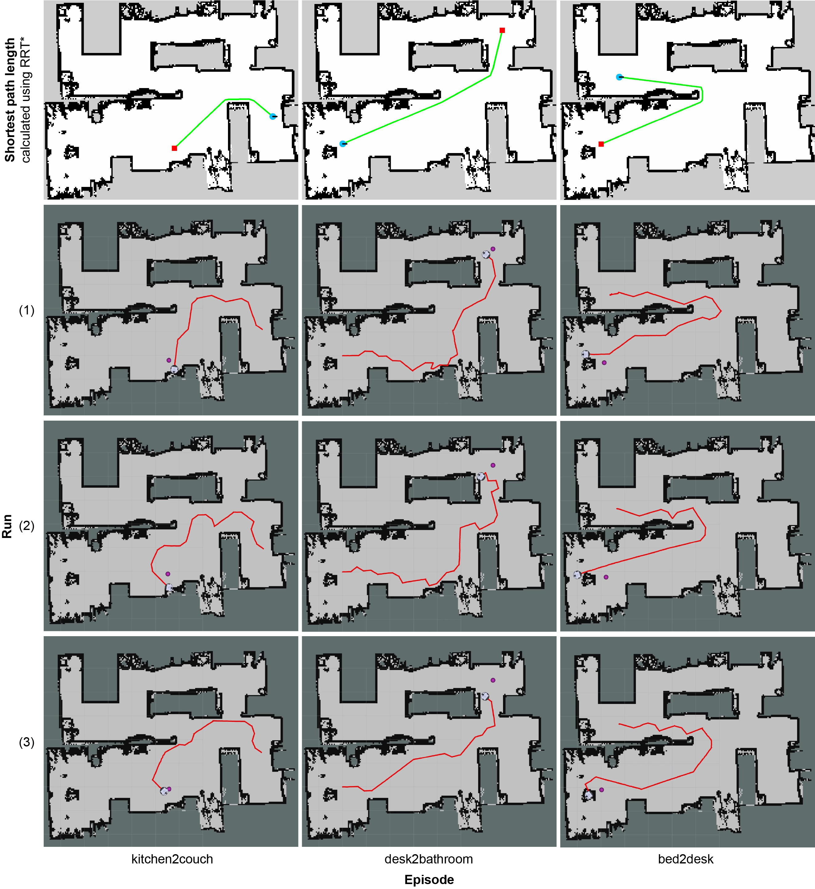

Naoki Yokoyama2
Naoki Yokoyama2
 Oles Dobosevych1
Oles Dobosevych1
 Dhruv Batra2,3
Dhruv Batra2,3
Can an autonomous agent navigate in a new environment without building an explicit map?
For the task of PointGoal navigation (Go to $\Delta x$, $\Delta y$) under idealized
settings (no RGB-D and actuation noise, perfect GPS+Compass), the answer is a clear `yes`
— map-less neural models composed of task-agnostic components (CNNs and RNNs) trained
with
large-scale reinforcement learning achieve 100% Success on a standard dataset
(Gibson [1]). However,
for
PointNav in a
First, we identify the main (perhaps, only) cause of the drop in performance: absence of GPS+Compass. An agent with perfect GPS+Compass faced with RGB-D sensing and actuation noise achieves 99.8% Success (Gibson-v2 val). This suggests that (to paraphrase a meme) robust visual odometry is all we need for realistic PointNav; if we can achieve that, we can ignore the sensing and actuation noise.
With that as our operating hypothesis, we scale dataset and model size, and develop human-annotation-free data-augmentation techniques to train models for visual odometry. We advance the state of art on the Habitat Realistic PointNav Challenge from 71% to 94% Success (+23, 31% relative) and 53% to 74% SPL (+21, 40% relative). While our approach does not saturate or `solve` this dataset, this strong improvement combined with promising zero-shot sim2real transfer (to a LoCoBot) provides evidence consistent with the hypothesis that explicit mapping may not be necessary for navigation, even in a realistic setting.
1According to Habitat Challenge 2020 PointNav benchmark held annually. A concurrent as-yet-unpublished result has reported 91% Success on 2021's benchmark, but we are unable to comment on the details because an associated report is not available.
Qualitative Results
Gibson 4+ (val)

Matterport3D (val)

Agent is asked to navigate from blue square to green square. The color of the trajectory changes from dark to light over time (cv2.COLORMAP_WINTER for agent's trajectory, cv2.COLORMAP_AUTUMN for agent's estimate of its trajectory).
Navigation videos and top-down maps were generated during two different agent runs, which means other actuation and sensing noise were applied, so the trajectories on video and image may be slightly different.
To see navigation metrics for episodes from the playlists above, please, open the video in a separate tab and check the video description.
Simulation-to-reality Transfer
3rd-person view
rosbag videos
To see navigation metrics for episodes from the playlists above, please, open the video in a separate tab and check the video description.
Reality experiments top-down maps
References
- Santhosh K. Ramakrishnan, Aaron Gokaslan, Erik Wijmans, Oleksandr Maksymets, Alexander Clegg, John Turner, EricUndersander, Wojciech Galuba, Andrew Westbury, Angel X. Chang, Manolis Savva, Yili Zhao, and Dhruv Batra. Habitat-matterport 3d dataset (hm3d): 1000 large-scale 3d environ-ments for embodied ai.arXiv preprint arXiv:2109.08238,2021
- Xiaoming Zhao, Harsh Agrawal, Dhruv Batra, and Alexan-der G. Schwing.The surprising effectiveness of visualodometry techniques for embodied pointgoal navigation. InProceedings of the IEEE/CVF International Conference onComputer Vision, pages 16127–16136, 2021